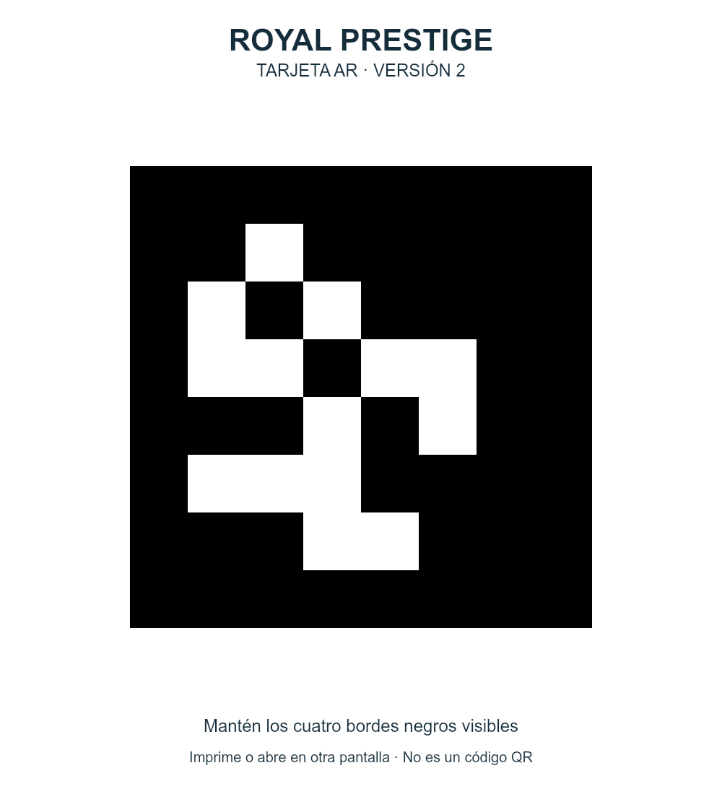

Tarjeta nueva V2 para el iPhone
Esta tarjeta V2 reemplaza la fotografía anterior. Muestra el cuadrado completo en otra pantalla o imprime la tarjeta. En el iPhone abre la cámara interactiva y mantén visible la imagen, sin reflejos y con buena luz.

La tarjeta debe estar en otra pantalla o en papel: el mismo iPhone no puede apuntar su cámara a su propia pantalla.